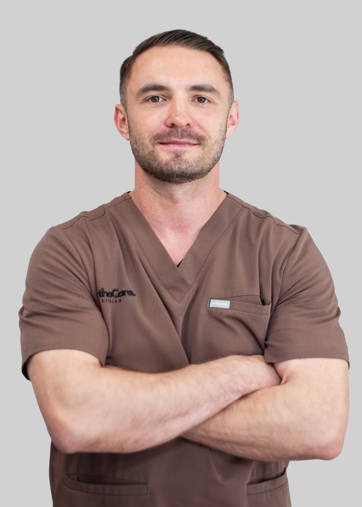

lek. Tomasz Markowski
Specjalista ortopedii i traumatologii narządu ruchu 
Dr Tomasz Markowski to specjalista ortopedii i traumatologii narządu ruchu, absolwent Wydziału
Wojskowo-Lekarskiego Uniwersytetu Medycznego w Łodzi. Posiada wieloletnie doświadczenie
kliniczne zdobyte m.in. w Mazowieckim Szpitalu Specjalistycznym w Radomiu oraz w Radomskim
Szpitalu Specjalistycznym. Obecnie operuje pacjentów również w Szpitalu Powiatowym w Pionkach i
w Opocznie.
Specjalizuje się w leczeniu przewlekłego bólu kręgosłupa z wykorzystaniem małoinwazyjnych technik
interwencyjnych. Wykonuje kriolezję nerwów pod kontrolą USG – zabieg, który przynosi długotrwałą
ulgę w bólu i znaczącą poprawę jakości życia pacjentów. Do tej pory przeprowadził ponad 400 takich
procedur. Leczy również zespoły bólowe związane z przepuklinami dyskowymi oraz niestabilnością
segmentów kręgosłupa. W swojej praktyce wprowadza również innowacyjne zabiegi z użyciem
preparatu Discogel – małoinwazyjnej metody leczenia bólu dyskogennego, polegającej na
przezskórnym wstrzyknięciu żelu do zmienionego chorobowo krążka międzykręgowego.
W codziennej pracy wykorzystuje również iniekcje z osocza bogatopłytkowego (PRP), kwasu
hialuronowego oraz blokady nerwów obwodowych pod kontrolą USG. Zajmuje się także leczeniem
urazów i przeciążeń kończyny górnej oraz kolana, w tym bólu barku, łokcia, nadgarstka i stawu
kolanowego. Wykonuje wybrane zabiegi artroskopowe oraz z zakresu chirurgii ręki.
Swoją wiedzą i doświadczeniem dzieli się prowadząc kursy dla lekarzy z zakresu iniekcji pod kontrolą
USG. Ukończył szereg prestiżowych szkoleń, m.in. AOTrauma Basic & Advanced Principles of Fracture
Management, IBRA – Trauma and Reconstruction of the Upper Limb, kurs "Ostra Ręka" oraz
szkolenie z artroskopii kolana i ultrasonografii interwencyjnej w kriolezji.